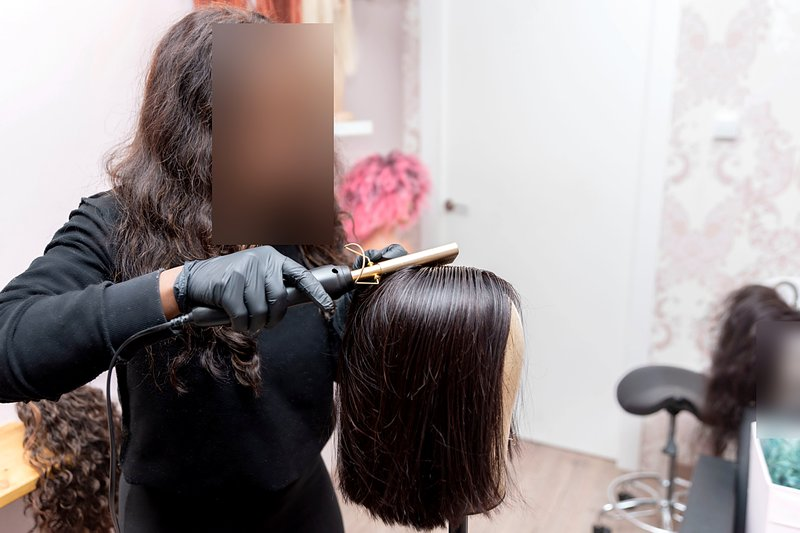

Lace-front wig install: 5 mistakes that give it away (and the fixes)
By a KuuStore stylist, Published November 14, 2026, Last reviewed November 14, 2026
It is a Saturday morning in Miramar, the sun is already working by 10 a.m., and your new lace front looks fine in the bathroom mirror. By lunch, one corner by your ear has lifted, the hairline looks shiny, and you can see the edge of the lace every time you pass a shop window. The wig is not the problem. Almost every install that “looks like a wig” traces back to one of five small mistakes, and every one of them happens before the styling starts.
The short answer: A lace front (a wig with a sheer mesh panel at the front, so the hair looks like it grows out of your skin) only looks natural when four things are right: your own hair is braided flat underneath, the skin at your hairline is clean and dry, the glue is applied in thin layers and left 1 to 2 minutes until it turns tacky and clear, and the lace is cut in small snips, leaving about a quarter inch, instead of one big cut. Get those four right and most “bad wigs” turn into good installs.
Mistake 1: hair that is not flat underneath
Lace shows everything under it. A puffy braid, a loose bun, or damp hair under the cap makes bumps that read through the mesh like stones under a sheet. Braid your hair flat against your head, or slick it back, then put the wig cap (a thin cap that holds your hair down under the wig) on top. And let your hair dry fully first: in November the air in Broward finally dries out a little, but a summer install on damp hair will itch and lift before the day is done.
Mistake 2: glue on skin that was never cleaned
Glue sticks to skin, not to the lotion, sunscreen, and natural oil sitting on top of it. Wipe the skin right at your hairline with a cotton pad and rubbing alcohol, and let it dry. Skip this and the lace can let go within the hour, especially once South Florida heat gets you sweating on a walk down University Drive.
Mistake 3: pressing the lace into wet glue
This is the one that catches almost every beginner. Wig glue works like paint on a wall: thin coats, each one given time, hold better than one thick coat slapped on wet. Spread a thin layer, wait until it turns tacky, sticky, and mostly clear instead of white, which takes about 1 to 2 minutes, then press the lace down with the back of a rat-tail comb (the thin-handled comb stylists use for parting), not your fingers. Fingertips lift the lace and leave glue prints on it. A second thin layer is fine. A thick first layer is how you get a white, crusty line that no makeup can hide.
Here is that same idea a second way, because it is the step people rush. Wet glue is like wet nail polish: touch it early and you do not get a smooth finish, you get a smudge that takes longer to fix than the wait would have. The 1 to 2 minutes is the install. Everything after it is just placing.
Mistake 4: cutting all the lace off in one go
The extra lace at the front has to come off, but lace does not grow back. Cut it in small sections with small scissors, a little at a time, and leave about a quarter inch in front of the hairline. Cut it flush in one nervous pass and the edge can fray, sit too far back, or show a hard straight line, the exact line you were trying to hide.
Mistake 5: wearing it tight and sleeping in the glue
Snug is right; tight is damage. Straps pulled hard all day pull on your edges, the soft baby hairs at your hairline, and edges are the slowest hair on your head to grow back. At night, take the wig off if your install allows it, or wrap it and sleep on a satin pillowcase. Clean old glue off the lace with alcohol before the next install. Glue left to build up turns cloudy, and cloudy lace is what people are actually seeing when an install looks “off.”
Watch it done start to finish
The video below shows a full frontal install in order: the bald cap method (a cap worn under the wig so the base looks like scalp), how the glue goes on without lifting or build-up, how the lace is laid for a natural hairline, and the finishing melt. Watch for the pauses, she lets each layer set before she touches it, which is the whole lesson.
What the video shows, in plain words: A stylist installs a frontal wig from an empty head to the finished look, with nothing skipped. She starts with the bald cap, glued down and tinted so it reads as scalp under the lace. Then she applies the lace glue in sections, waits for it to set, and lays the lace into it, pressing it flat instead of smoothing it with her fingers. You see the lace cut after the wig is placed, not before, and you see the second melt that makes the edge disappear into the skin. She finishes with styling, so you can compare the first minute with the last: same wig, same head, the difference is prep, thin layers, and patience at exactly the steps this post names.
When to hand it to a stylist
Book the install instead of fighting it if your skin reacts to glue (red, itchy, or sore skin means stop and take it off), if the lace tears, or if your edges are already thin and you cannot risk tension on them. A KuuStore stylist fits you at the shop, serving clients from across Miami-Dade, Broward, and Palm Beach, and the first install is also a lesson: watch what she does, in what order, and your own installs get faster from there.